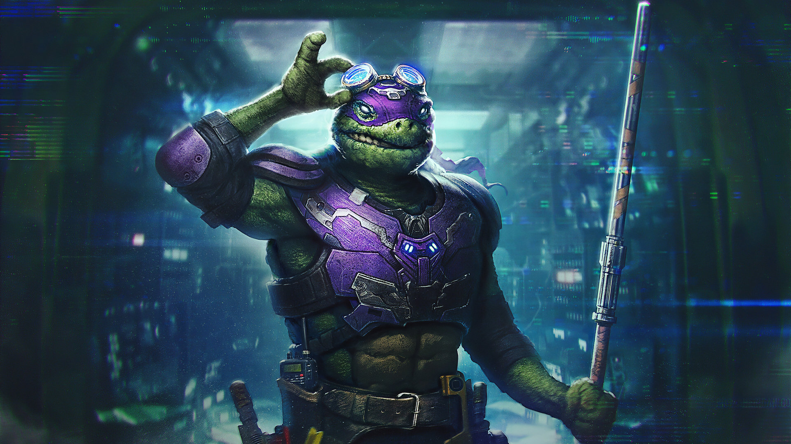

donatello
Donatello, nicknamed Don or Donnie, is a fictional superhero and one of the four main characters of the Teenage Mutant Ninja Turtles comics and all related media. He is co-creator Peter Laird's favorite Turtle. In the original comics, all four of the Turtles wear red masks. In the animated cartoons, he dons a purple mask. The creators gave all four turtles different mask colors, in order to tell them apart. He is usually depicted wearing a purple eye mask. His primary signature weapon are his (2) effective bō staffs. In all media, he is the smartest of the four turtles. He is listed as 4 feet (1.2 m) in height on the original action figure release.